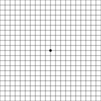

Este artÃculo es informativo. No sustituye la consulta con tu oftalmólogo, que es quien diagnostica y trata la DMAE.
Qué es la DMAE
En el fondo del ojo está la retina, y en el centro de la retina, la mácula: una zona muy pequeña de la que depende la visión fina, la que usamos para leer, coser, ver caras o distinguir detalles. En la DMAE la mácula se va dañando con la edad. Por eso afecta sobre todo a la visión central, mientras que la visión periférica suele conservarse. Quien tiene DMAE avanzada ve mal lo que mira de frente, pero puede seguir moviéndose por casa.
Es muy frecuente. Un análisis de 39 estudios publicado en The Lancet Global Health estimó que en 2020 habÃa en el mundo unos 196 millones de personas con DMAE, y que serán unos 288 millones en 2040 por el envejecimiento de la población.[1]
Los dos tipos: seca y húmeda
- DMAE seca (atrófica). Es la más frecuente. Avanza despacio, a lo largo de años. En las fases iniciales aparecen unos depósitos en la retina, llamados drusas. En la fase avanzada, la llamada atrofia geográfica, se pierden zonas de la mácula.
- DMAE húmeda (neovascular). Es menos frecuente, pero más rápida. Bajo la retina crecen vasos sanguÃneos anómalos que dejan salir lÃquido o sangre, y la visión puede empeorar en semanas. Tiene tratamiento, y cuanto antes empiece, mejor.
Una DMAE seca puede convertirse en húmeda. Por eso es tan importante vigilar los cambios.
Quién tiene más riesgo
- La edad, sobre todo a partir de los 60.
- El tabaco: es el factor de riesgo que más depende de nosotros. Fumar multiplica el riesgo de DMAE entre dos y cuatro veces, y dejarlo siempre ayuda, a cualquier edad.[5]
- Los antecedentes familiares y la genética.
- Tener DMAE en un ojo, porque aumenta la probabilidad de que aparezca en el otro.
Señales de alarma: al oftalmólogo sin esperar
Ve al oftalmólogo ese mismo dÃa o lo antes posible si notas:
- lÃneas rectas que de repente ves torcidas u onduladas: el marco de una puerta, las baldosas, las lÃneas de un cuaderno;
- una mancha oscura o borrosa nueva en el centro de la visión;
- una pérdida de visión rápida en uno de los ojos.
Pueden ser signos de DMAE húmeda. La guÃa NICE recomienda derivar estos casos de forma urgente, normalmente en un dÃa laborable, y empezar el tratamiento en las dos semanas siguientes.[2] El tiempo cuenta: el tratamiento busca frenar el daño, y la visión que ya se ha perdido es difÃcil de recuperar.
Un detalle importante: cuando un ojo empieza a fallar, el otro lo compensa y es fácil no darse cuenta. Por eso hay que mirar cada ojo por separado.
Cómo vigilarla en casa: la rejilla de Amsler
La rejilla de Amsler es una cuadrÃcula con un punto en el centro que sirve para detectar distorsiones en la visión central. Si tienes DMAE o tu oftalmólogo te lo ha indicado, úsala una vez por semana:
- Imprime la rejilla al 100 %, sin ajustarla a la página, y ponla a la altura de los ojos con buena luz.
- Ponte tus gafas de cerca y colócate a unos 30 centÃmetros.
- Tápate un ojo y mira fijamente el punto central.
- Sin dejar de mirar el punto, fÃjate en si alguna lÃnea se ve torcida, borrosa o con huecos, o si falta algún cuadro.
- Repite con el otro ojo.
Si notas algo nuevo o diferente a la semana anterior, pide cita con tu oftalmólogo sin esperar a la siguiente revisión. La rejilla no sustituye a las revisiones: es una alarma para no dejar pasar un cambio.


Qué trata el oftalmólogo
- DMAE húmeda. Se trata con inyecciones intravÃtreas de fármacos antiangiogénicos (anti-VEGF), que frenan el crecimiento de los vasos anómalos. Se ponen en la consulta de oftalmologÃa, de forma periódica y según la respuesta de cada persona. Han cambiado el pronóstico de esta enfermedad.
- DMAE seca en fase intermedia. En los estudios AREDS y AREDS2, un suplemento con dosis concretas de vitaminas C y E, zinc, cobre, luteÃna y zeaxantina redujo el riesgo de pasar a DMAE avanzada en personas con DMAE intermedia, o avanzada en un solo ojo.[3][4] No sirve para prevenirla en quien no la tiene ni la cura. La formulación con betacaroteno se desaconseja en fumadores y exfumadores. Tómalo solo si te lo indica tu oftalmólogo, que sabrá si tu fase lo justifica.
- Atrofia geográfica (seca avanzada). En Estados Unidos se aprobaron en 2023 dos tratamientos que frenan su avance, pero en Europa, por ahora, ninguno ha conseguido la aprobación.[9] Tu oftalmólogo te dirá si hay ensayos clÃnicos u opciones en tu caso.
Además, para todos: no fumar, una dieta rica en verduras de hoja verde y pescado, y las revisiones que marque el especialista.
Cuando la visión ya no vuelve: la baja visión
Aunque la enfermedad esté controlada, puede quedar una pérdida de visión central que ya no se corrige con gafas. Es lo que llamamos baja visión. En este punto mucha gente oye "no hay nada más que hacer", y no es verdad: se puede aprovechar al máximo la visión que queda. Es lo que hace la rehabilitación visual.
Hay evidencia de que funciona. En el ensayo LOVIT, un programa de rehabilitación de baja visión mejoró la capacidad de lectura y de hacer tareas cotidianas frente a un grupo en lista de espera, que empeoró.[6] En LOVIT II, añadir entrenamiento a las ayudas mejoró los resultados en personas con visión moderadamente baja.[7] La revisión Cochrane de ayudas para la lectura concluye que no hay una ayuda que sea la mejor para todo el mundo: hay que elegirla de forma individual, probándola.[8]
Las ayudas más útiles
- Luz bien colocada. Una lámpara de tarea cerca del texto, a un lado y sin reflejos. Es la ayuda más barata y, muchas veces, la que más cambia las cosas.
- Lupas. De mano, con luz, para lecturas cortas fuera de casa. De pie, para leer apoyado en la mesa sin cansar el brazo.
- Lupas electrónicas. Dan más aumento y más contraste, y permiten poner la letra blanca sobre fondo negro, que a muchas personas con DMAE les resulta más cómodo. Las de sobremesa sirven para textos largos.
- Gafas de cerca con mucho aumento. Dejan las manos libres, pero obligan a leer muy cerca del papel.
- Telescopios. Para ver la tele o un cartel de lejos.
- Filtros. Unas lentes que reducen el deslumbramiento y mejoran el contraste.
- El móvil y la tableta. La lupa de la cámara, el zoom, la letra grande y la lectura en voz alta son ayudas que muchas personas ya llevan en el bolsillo.
Aprender a mirar de lado
Cuando la mácula está dañada, en el centro de la visión queda una mancha. El cerebro puede aprender a usar una zona sana de la retina, justo al lado, para leer y mirar: es la visión excéntrica. Se entrena con ejercicios y forma parte de la rehabilitación.
Cómo es una valoración de baja visión
En Panisse la hacemos asÃ:
- Empezamos por tus objetivos: qué quieres volver a hacer.
- Medimos tu visión con pruebas pensadas para visión baja, incluida una prueba de lectura con frases que nos dice qué tamaño de letra lees con soltura y a qué velocidad.
- Calculamos el aumento que necesitas.
- Probamos las ayudas con tu propio material: tu periódico, tu móvil, tus recetas.
- Te enseñamos a usarlas y hacemos seguimiento: a la semana, al mes y después de forma periódica.
Siempre trabajamos junto a tu oftalmólogo: si nos das permiso, le enviamos un informe. Más información en nuestra página de baja visión en Lugo.
Para la familia
- Más luz y más contraste en casa: cinta de color en el borde de los escalones; platos de un color que contraste con la comida; interruptores y enchufes visibles; teléfonos y relojes con números grandes.
- El sÃndrome de Charles Bonnet. Algunas personas con pérdida de visión ven figuras, caras o dibujos que saben que no están ahÃ. Son alucinaciones visuales por la pérdida de visión y no son una enfermedad mental. Según los estudios, las sufre entre el 15 % y la mitad de las personas con baja visión. Muchas no lo cuentan por miedo: pregúntalo con naturalidad y coméntalo con el oftalmólogo.
- La ONCE. Si la visión en los dos ojos es igual o inferior a 0,1 con la mejor corrección, o el campo visual es de 10 grados o menos, se puede solicitar la afiliación a la ONCE.[10] Ofrece rehabilitación, orientación y movilidad, y otros apoyos.
Preguntas frecuentes
¿La DMAE deja ciego del todo?
Es muy raro que produzca ceguera total, porque afecta a la visión central y la periférica suele conservarse. Pero puede dificultar mucho la lectura y reconocer caras, y por eso hay que vigilarla y tratarla a tiempo.
¿Me van a servir unas gafas nuevas?
Si la mácula está dañada, unas gafas nuevas mejoran poco. Aun asÃ, conviene comprobar la graduación: a veces se gana algo, y es la base para elegir el resto de ayudas.
¿Leer mucho o mirar el móvil empeora la DMAE?
No. Usar la vista no la gasta. Leer con buena luz y con la ayuda adecuada es recomendable.
¿Los suplementos de vitaminas previenen la DMAE?
Los estudios AREDS demostraron beneficio en fases concretas de la enfermedad, no como prevención general. Consúltalo con tu oftalmólogo antes de tomarlos.
¿Cada cuánto debo usar la rejilla de Amsler?
Una vez por semana, con cada ojo por separado, o con la frecuencia que te indique tu oftalmólogo.
Fuentes
- Wong WL, et al. Global prevalence of age-related macular degeneration and disease burden projection for 2020 and 2040: a systematic review and meta-analysis. Lancet Glob Health. 2014;2(2):e106-16. doi:10.1016/S2214-109X(13)70145-1
- National Institute for Health and Care Excellence (NICE). Age-related macular degeneration (NG82). 2018. nice.org.uk/guidance/ng82
- Age-Related Eye Disease Study Research Group. A randomized, placebo-controlled, clinical trial of high-dose supplementation with vitamins C and E, beta carotene, and zinc for AMD: AREDS report no. 8. Arch Ophthalmol. 2001;119(10):1417-36. doi:10.1001/archopht.119.10.1417
- Age-Related Eye Disease Study 2 Research Group. Lutein + zeaxanthin and omega-3 fatty acids for AMD: the AREDS2 randomized clinical trial. JAMA. 2013;309(19):2005-15. doi:10.1001/jama.2013.4997
- Thornton J, et al. Smoking and age-related macular degeneration: a review of association. Eye. 2005;19(9):935-44. doi:10.1038/sj.eye.6701978
- Stelmack JA, et al. Outcomes of the Veterans Affairs Low Vision Intervention Trial (LOVIT). Arch Ophthalmol. 2008;126(5):608-17. doi:10.1001/archopht.126.5.608
- Stelmack JA, et al. Outcomes of the Veterans Affairs Low Vision Intervention Trial II (LOVIT II). JAMA Ophthalmol. 2017;135(2):96-104. doi:10.1001/jamaophthalmol.2016.4742
- Virgili G, et al. Reading aids for adults with low vision. Cochrane Database Syst Rev. 2018;4:CD003303. doi:10.1002/14651858.CD003303.pub4
- Agencia Europea del Medicamento (EMA). Syfovre (pegcetacoplan) — EPAR. 2024. ema.europa.eu
- ONCE. Requisitos de afiliación. once.es